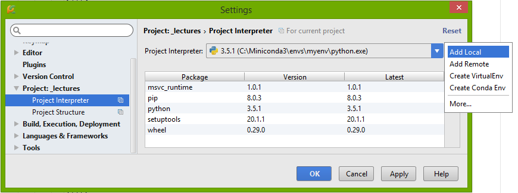
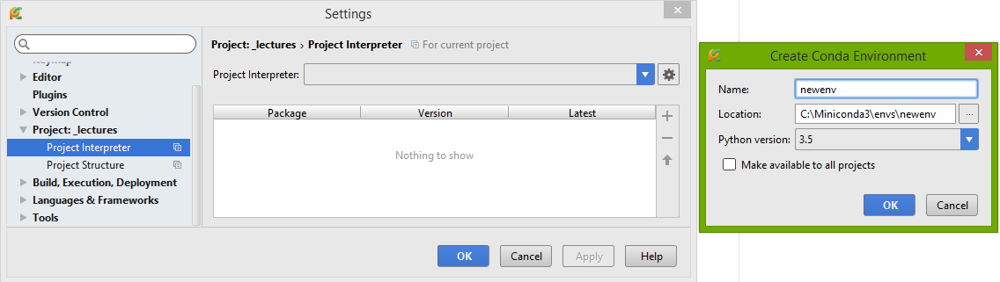

Úvod
by Jiří Novotný
Balíčkovací systémy
(přednášku připravil Jiří Novotný)
Balíčkovací systémy slouží k bezproblémové instalaci modulů a knihoven z repozitářů, souhrně balíčků neboli packages.
Repozitáře pak slouží jako spojení mezi vývojáři knihoven a jejich koncovým „zákazníkem“, tj. programátorem. Vývojář umístí svůj balíček do repozitáře a dodá k němu několik informací – zejména jaká verze Pythonu a jaké další balíčky či knihovny jsou potřeba a jakým způsobem se má balíček nainstalovat (cesty, kompilace C knihoven a podobně).
Chce-li programátor nainstalovat nějaký balíček, zadá balíčkovacímu systému jeho název (případně i konkrétní verzi) a ten už se postará o jeho správnou instalaci včetně stažení závislostí neboli dependencies. Typicky se pro toto používá třeba pip a jeho
Virtuální prostředí
Programátor se snadno může dostat do situace, kdy pro různé projekty potřebuje různé verze téhož balíčku (případně samotného Pythonu). Jenže balíčky se standardně instalují do a načítají z adresáře, jehož cesta je definována v systémové proměnné PATH. Je tak v zásadě nemožné mít nainstalovaných několik verzí téhož balíčku.
Tento problém řeší virtuální prostředí – pokud ho vytvoříme a aktivujeme, upraví se pythoní cesty v PATH, které nyní bude směřovat do námi definovaného adresáře, a Python tak pro své součásti bude sahat sem. Současně se sem budou instalovat nové balíčky a jejich součásti.
(Ana)conda
Program conda z dílny projektu PyData řeší obě věci najednou – slouží jako balíčkovací systém (využívá i vlastní repozitář) a zároveň jako manažer virtuálních prostředí. Je součástí projektu Anaconda, který poskytuje distribuci Pythonu, která již v základu obsahuje spoustu balíčků a knihoven pro vědeckou práci (jejich výčet).
Velkou výhodou je, že člověk nepotřebuje mít administrátorská práva, ať už pracuje ve Windows či Linuxu – instalace spočívá v pouhém rozbalení.
V následujících slajdech si ukážeme instalaci a základní práci s condou.
Instalace (Ana)condy
Příslušné instalátory dle OS najdete zde: Anaconda, Miniconda.
Instalace je jednoduchá – ve všech případech máte možnost si stáhnout samorozbalovací archiv (ve Windows GUI instalátor, v Linuxu shell skript), případně i archiv, který si sami někam rozbalíte (poté je však nutné ručně přidat cestu do PATH).
První seznámení s condou
Máte-li správně nainstalovanou condu zjistíte jednoduše – v příkazové řádce zkuste napsat
Užitečný je příkaz --help, např.
Dále se může hodit tento cheatsheet v PDF a oficiální příručka.
Vytvoření virtuálního prostředí I
Virtuální prostředí (dále VP) se vytváří jednoduše pomocí příkazu
Všechna VP se defaultně vytvářejí jinde podle OS a podle toho, zda jste si nainstalovali Anacondu či Minicondu. Jejich seznam s názvy a cestami se Vám ukáže příkazem conda env list (nebo
Vytvoření virtuálního prostředí II
Některé parametry příkazu
-
-n NÁZEV ,--name NÁZEV – název virtuálního prostředí (asi nejužívanější varianta); -
--copy – zkopíruje balíčky místo vytvoření hard nebo softlinku (některé balíčky už jsou přítomny v kořenovém VP root, takže se na ně může jen vytvořit link); -
--clone VP – naklonuje existující VP. Parametrem je jeho název nebo cesta k němu; -
--dry-run – conda pouze vypíše to, co by měla provést.
Za posledním pojmenovaným parametrem následuje seznam balíčků, které chcete do nového prostředí umístit. Povinný kupodivu není ani jeden, ale v tom případě vytvoříte prázdné VP, které bude vidět výchozí Python a balíčky systému, nikoliv Condy! Takže alespoň jeden budete chtít uvést, a to pravděpodobně python, který je také brán jako balíček.
U balíčků můžete dále specifikovat verzi pomocí
Vytvoření virtuálního prostředí – příklady
-
vytvoření VP s nejvyšším dostupným trojkovým Pythonem
conda create -n myenv python=3 -
vytvoření VP s Pythonem 2.7
conda create -n myenv python=2.7 -
vytvoření VP s Pythonem 2.7 a balíčkem numpy
conda create -n myenv python=2.7 numpy -
zobrazení seznamu VP
conda env list
conda info --envs
Práce ve virtuálním prostředí
Chce-li člověk začít pracovat ve vytvořeném VP, stačí k tomu příkaz conda activate VirtuálníProstředí.
bin daného VP).
Že člověk pracuje ve VP pozná snadno – před aktuální cestou v příkazové řádce se ukazuje název aktivního VP. Jelikož nyní PATH ukazuje na adresář s VP, veškeré příkazy, jako je např. python nebo pip, budou směřovat právě sem.
Pro deaktivaci aktuálního VP pak stačí zavolat conda deactivate. Conda vás tím automaticky přepne zpět na základní VP (tedy base).
Odstranění virtuálního prostředí
Kompletní likvidaci vybraného VP zařídí příkaz:
conda remove -n VirtuálníProstředí --all
--name.
Přepínač --all je důležitý – bez specifikace všech balíčků k odstranění nebude totiž odstraněno ani dané VP.
Instalace balíčků
Základním příkazem pro instalaci balíčků je
Chcete-li použít repozitář Anaconda, musíte ho specifikovat parametrem
Kromě toho můžete instalovat i balíčky přímo ze souboru, stačí místo názvu balíčku zadat lokální cestu k němu.
--offline instalovat i bez připojení k internetu.
Instalace balíčků – příklady
-
instalace Djanga
conda install django -
instalace Djanga ve verzi 1.9.2
conda install django=1.9.2 -
instalace rdKitu z repozitáře Anaconda
conda install -c rdkit rdkit 📝Lepší je asi uvést úplnou cestu k channelu, tj. https://conda.anaconda.org/rdkit, viz https://anaconda.org/rdkit/rdkit. -
instalace rdKitu ze souboru (takto samozřejmě pokud je soubor v adresáři, kde zrovna pracujete)
conda install rdkit-2015.09.2-np110py27_0.tar.bz2 -
jelikož PATH míří do našeho aktivního VP, je možné použít i pip a conda o tom navíc bude vědět (balíček nainstalovaný pipem je možné normálně vidět a ovládat condou)
pip install django==1.9.2
Správa balíčků
Vždy se týká aktivního VP!
-
zobrazí seznam balíčků
conda list -
aktualizace balíčků
conda update django numpy -
aktualizace všech balíčků (včetně samotné condy a Pythonu)
conda update --all -
odstranění balíčků
conda remove django -
vyhledávání balíčků v repozitářích (defaultně regexem)
conda search django
Správa balíčků – Python
Jelikož příkaz conda update --all povýší (případně i poníží!) všechny balíčky daného virtuálního prostředí na co nejnovější verze tak, aby zůstala zachována jeho konzistence, bude se vlastní interpret Python'u apgrejdovat pouze na úrovni setinkových verzí. Pochopitelně – naprostá většina ostatních balíčků VP na něm totiž závisí! Proto:
Chcete-li novější Python, musíte zavolat příkaz conda update python. Conda se pak pokusí najít co nejnovější verzi Python'u, ke které bude schopná dodat i konzistentní VP.
PS: A když se verze mezi sebou hodně pohádají (novější Conda závislá na novější verzi Pythonu a ten neapgrejdovatelný z neznámého důvodu), budete si muset apgrejd vyžádat kompletně celý ručně, např. $ conda install --name base conda=23.3.1 python=3.11.
Správa virtuálních prostředí – „env list“, „env export & create“
-
zobrazí všechna vytvořená VP
conda env list (postaru téžconda info --envs ) -
export informací o aktivním VP do souboru
conda env export > myenv.yml -
nahrání informací o VP ze souboru
conda env create -f myenv.yml
Použití v PyCharmu
Pracujete-li v oblíbeném IDE PyCharm, můžete si u projektu zvolit libovolné VP vytvořené condou. Stačí v nastavení projektu nastavit cestu k pythonímu interpretru ve VP, které chcete použít, a to pomocí „Add Local“:

PyCharm však umí s condou spolupracovat, takže je v něm přímo možné vytvořit nové VP. Místo „Add Local“ stačí dát „Create Conda Env“:
